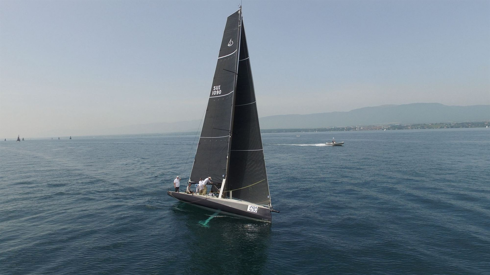
Competitive Sailing
Five or more performance sessions a week, racing at national and European level, and coaching youth crews in French, English and German.
Results
- WinnerTranslémanique en Solitaire 2025 (J/70)
- WinnerSSL Promotion League 2025
- 2ndGenève-Rolle-Genève 2025
- 10thJ/70 Youth European Championship 2023
- RegularJ/70 Winter Series, Monaco and Barcelona, 2022 to 2026
Société Nautique de Genève distinctions
- 2025Special DistinctionPerformance, Translémanique en Solitaire
- 2025Sports Merit AwardExcellence and commitment
- 2023Sports Merit AwardResults and commitment
- 2022Sports Merit AwardLeadership, team building and organisation
- Coaching. Coach youth crews in a weekly training programme for Ville de Genève and the Société Nautique de Genève.
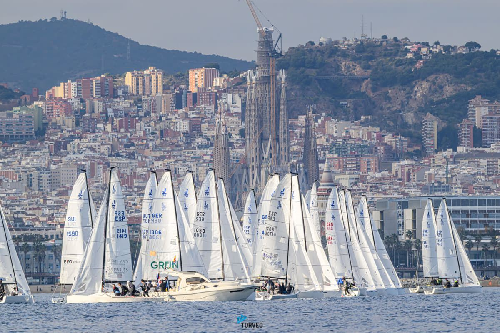
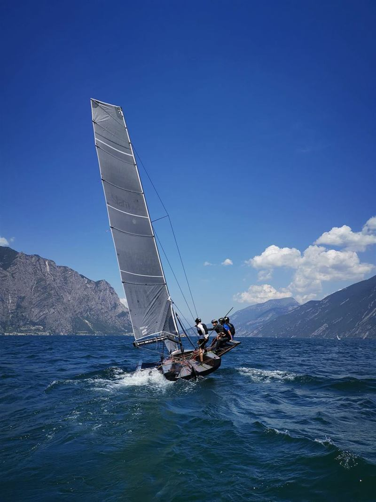
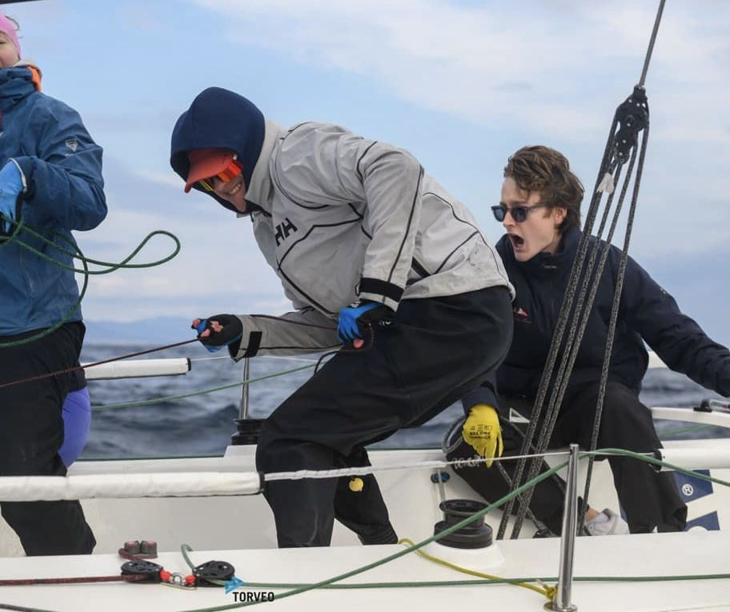
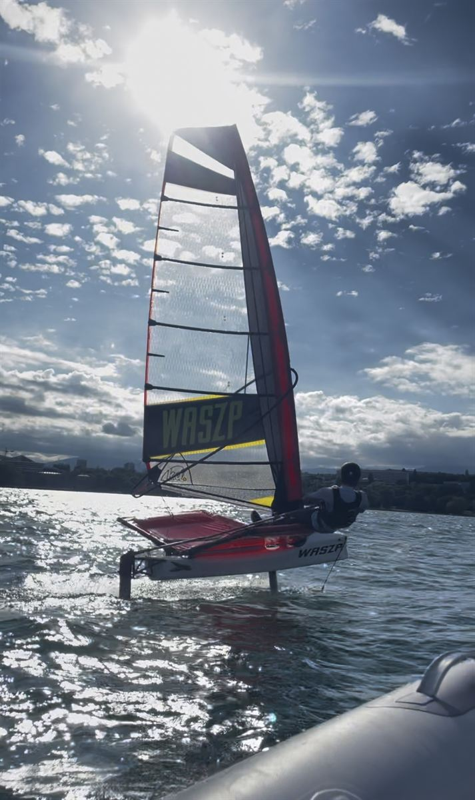
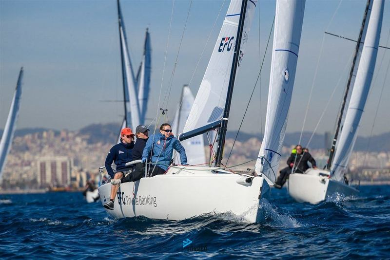
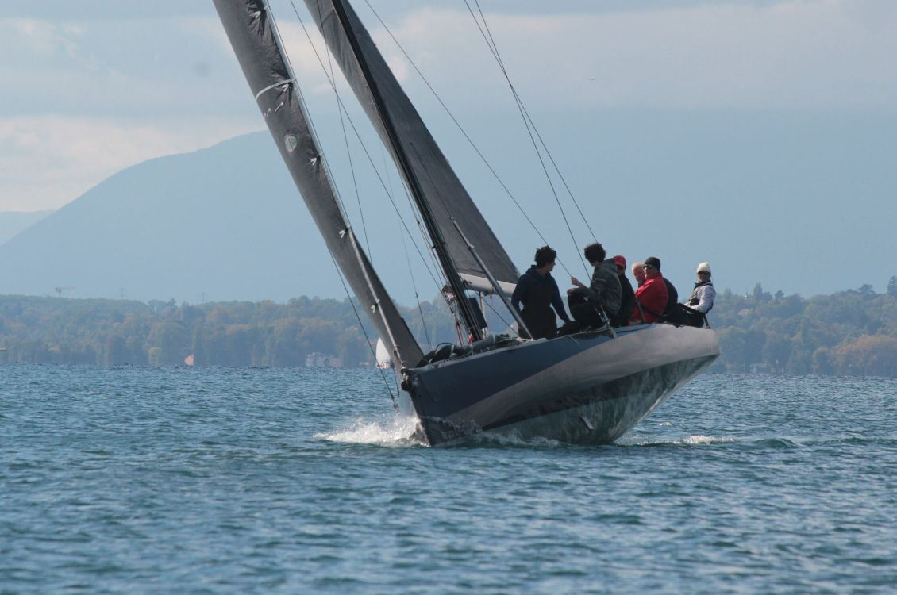
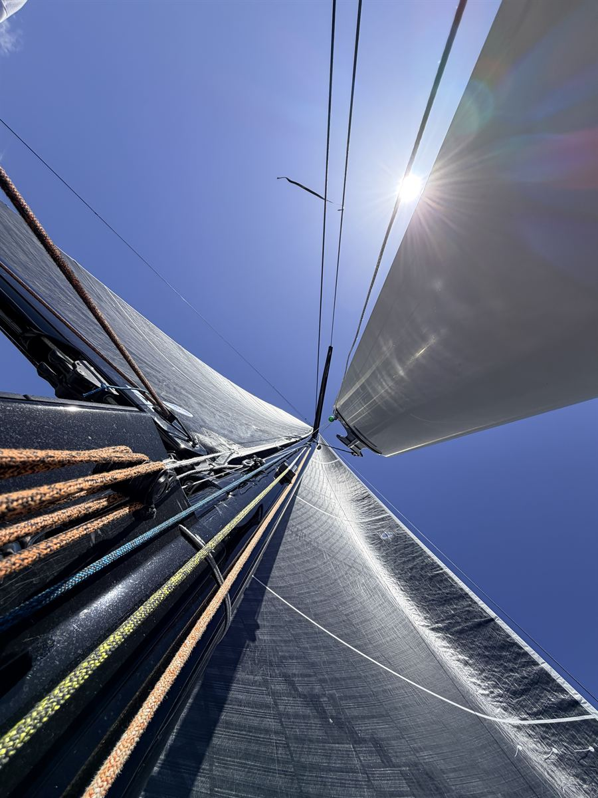
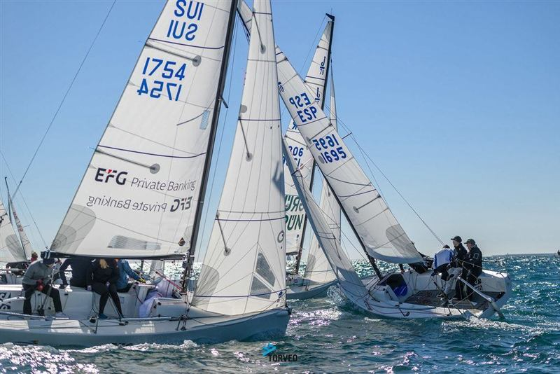
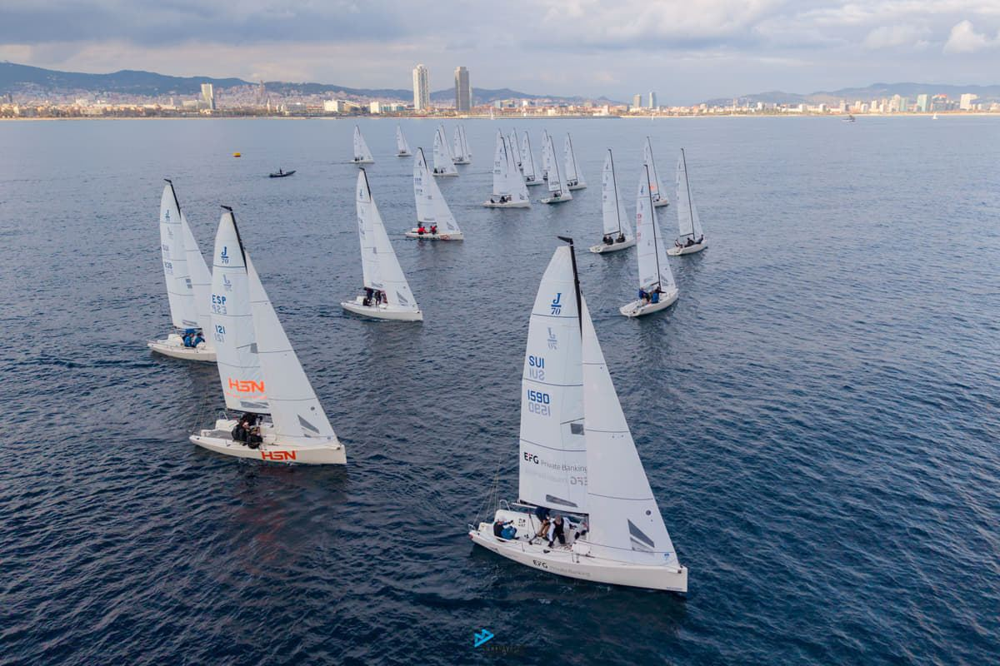
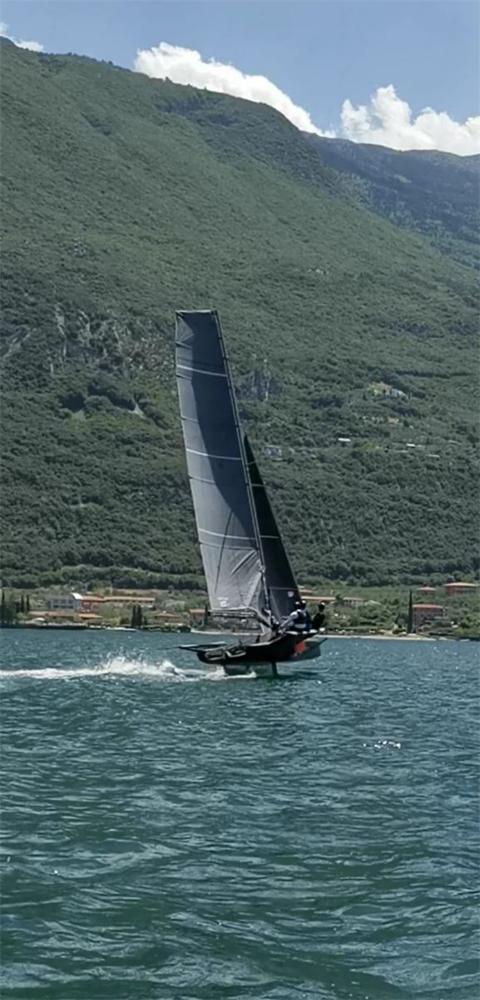
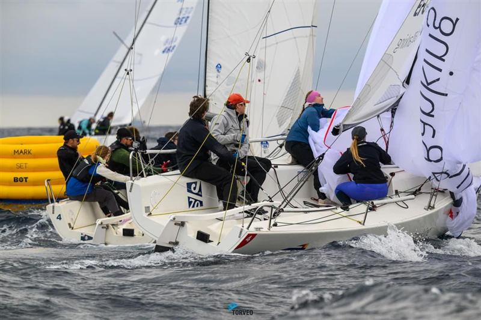
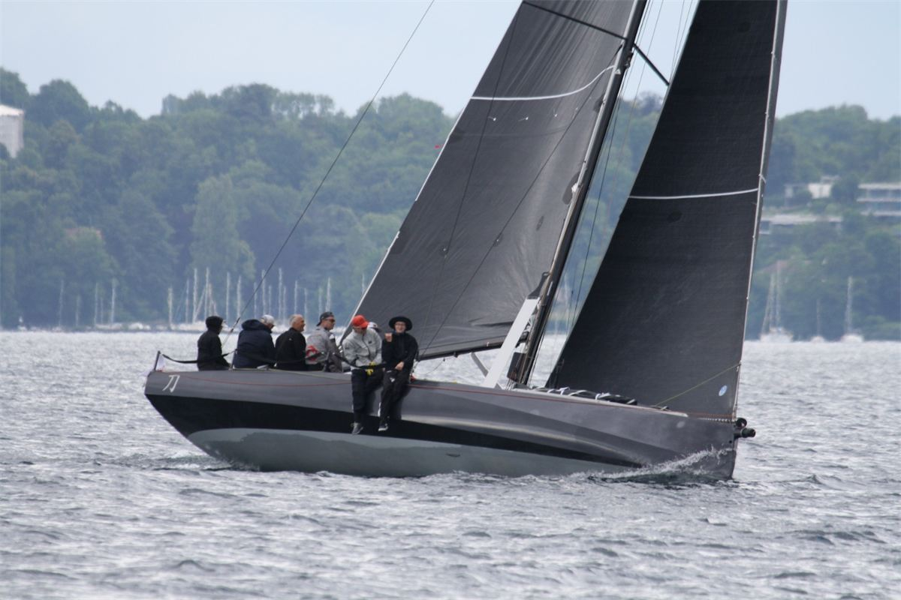
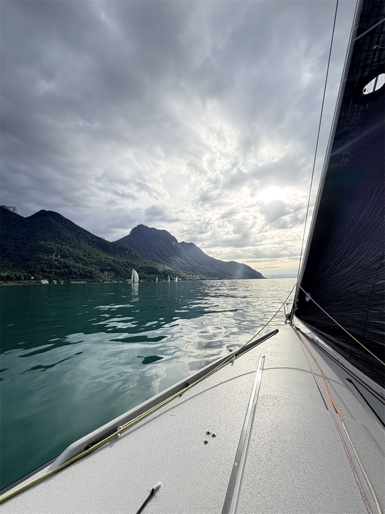